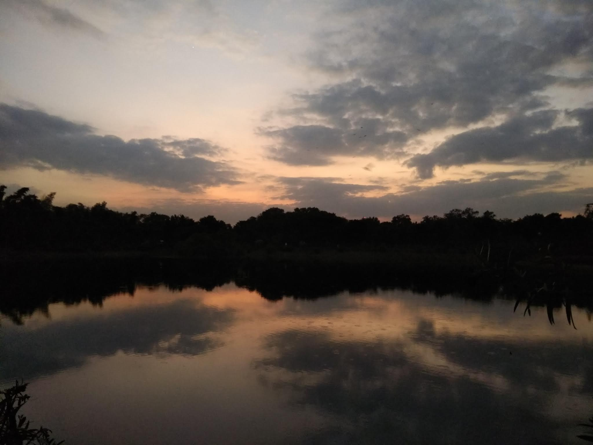
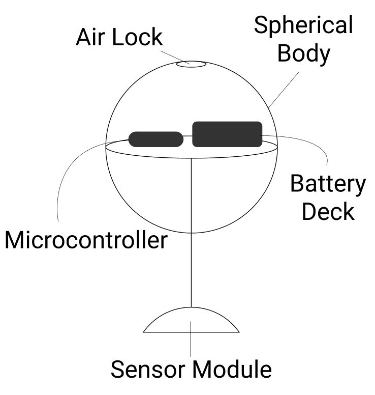

Coral
Type : Group Project
Category : Personal
Role : Team Leader
Duration : 3 months
What is this?
Coral is a smart waterbody health monitoring system. It collects data from the waterbodies using sensors. It gets it's name from the actual corals which indirectly help in keeping the waterbodies clean! The data collect is then displayed on the website. Although Coral can be used to monitor any water body, initially the intention was to monitor lakes as they are fresh water sources and could help in reducing chances of water scarcity. It intends to create awareness was made in hopes that together we could help keep our lakes clean.
A Small Intro!
I've always loved lakes. It's some place I've loved to go to and take a walk or jog around. As a kid, I often found myself spending time by a lake and breathing in the fresh air. But lately, I started to notice how all the lakes are getting polluted. Some so much that you could see dead fishes floating on the surface.
Why?
Polluted lakes not only harm the marine life but also have other harmful affects. Some of them being, polluted lakes breed insects like mosquitoes which spread diseases like Dengue, the froth formed on the lakes catch fire and pollute the air, toxic fumes from the lakes harm the people living in the surroundings. The pollution is caused by industries dumping toxic wastes into the water bodies. This isn't legal, industries are supposed to filter the wastes but to save a little money, some industries skip it. Clearly, something needs to be done.
How does it work?
All the work is done by microcontrollers. The microcontrollers are chosen so that they suit their role. We call each of the combination of components a bot. There's two types of bots which float on the water - The Scout and the Motherbot. The scouts are those bots which have sensors and only transmit data to the motherbot. The motherbot collects the data from all the scouts and publishes it to a server. The data on the server is then displayed on the website.
Process
1. Design and Material
All the work is done by microcontrollers. The microcontrollers are chosen so that they suit their role. We call each of the combination of components a bot. There's two types of bots which float on the water - The Scout and the Motherbot. The scouts are those bots which have sensors and only transmit data to the motherbot. The motherbot collects the data from all the scouts and publishes it to a server. The data on the server is then displayed on the website.
2. Microcontrollers and Sensors
All the work is done by microcontrollers. The microcontrollers are chosen so that they suit their role. We call each of the combination of components a bot. There's two types of bots which float on the water - The Scout and the Motherbot. The scouts are those bots which have sensors and only transmit data to the motherbot. The motherbot collects the data from all the scouts and publishes it to a server. The data on the server is then displayed on the website.
3. Server and Database
All the work is done by microcontrollers. The microcontrollers are chosen so that they suit their role. We call each of the combination of components a bot. There's two types of bots which float on the water - The Scout and the Motherbot. The scouts are those bots which have sensors and only transmit data to the motherbot. The motherbot collects the data from all the scouts and publishes it to a server. The data on the server is then displayed on the website.

4. Mesh Network
All the work is done by microcontrollers. The microcontrollers are chosen so that they suit their role. We call each of the combination of components a bot. There's two types of bots which float on the water - The Scout and the Motherbot. The scouts are those bots which have sensors and only transmit data to the motherbot. The motherbot collects the data from all the scouts and publishes it to a server. The data on the server is then displayed on the website.
Results and Conclusion
All the work is done by microcontrollers. The microcontrollers are chosen so that they suit their role. We call each of the combination of components a bot. There's two types of bots which float on the water - The Scout and the Motherbot. The scouts are those bots which have sensors and only transmit data to the motherbot. The motherbot collects the data from all the scouts and publishes it to a server. The data on the server is then displayed on the website.